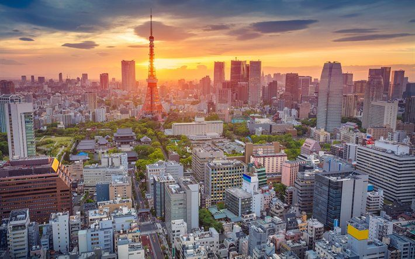

Tokyo foi fundada em 1457 e era chamada originalmente de Edo.
Futuramente em 1868, a metrópole se tornou a capital do Japão mudando seu nome para o atual.
Além de ser a capital japonesa ela também é a sede do governo nacional sendo o
centro político, econômico, educacional e cultural do Japão.
Tokyo possui cerca de 9 milhões de habitantes, já a região metropolitana
(que inclui todas as grandes cidades no entorno) possui aproximadamente 37 milhões de
habitantes, sendo o maior aglomerado urbano do mundo.
